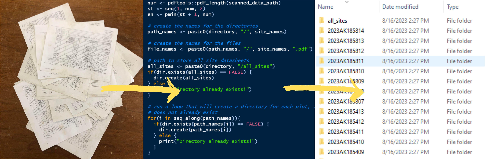

Chapter 8 Random tools
8.1 Organizing scanned data

Digitizing and organizing datasheets can be tedious. The following workflow automates this process, removing the need to create/name folders, name files, scan documents individually (or manually separate), and sort files into the appropriate folder. Instead, you can bulk scan (feed your whole stack to the scanner at once) and create a single pdf file. Then, using R we will separate that file into individual pdfs, one pdf for each site. Each pdf will be named using the site id and put in a folder using the same site id. Let’s go over the steps -
- Organize your paper datasheets in numerical order
- Scan your paper datasheets using the office scanner. You should be able to feed all of the datasheets in at once. The result is a single pdf file with all of your sites.
- Determine the site numbers. This step requires either extracting the site numbers from a GPS device, NASIS, or some other source OR typing the site numbers manually. Typing the site numbers manually would look like this:
my_site_number <- c(401, 402, 403, 404, 405)Depending on what you have available and your skillset (willing to use soilDB to pull sites/pedons under your name in NASIS, etc.), you may have to enter this manually. Fortunately, this will be the only manual part of the workflow.
- Install the ecositer R package
remotes::install_github("natearoe/ecositer", dependencies = FALSE)- Look at the help file for the scanned_data_organizer() function in R
?ecositer::scanned_data_organizer()- Run scanned data_organizer(). Remember that your paths need to have forward slashes, not back slashes. That’ll be a show stopper. I do find and replace all. Also, make sure you have created a vector of site numbers, that needs to be called in the site_number argument.
Here is an example of running scanned_data_organizer():
ecositer::scanned_data_organizer(scanned_data_path = "S:/NRCS/XEROX SCANS/DOC057.pdf",
directory = "C:/Users/Nathan.Roe/Documents/Alaska2023/Willow_project",
year_state_fips = "2023AK185",
site_number = my_site_number)That’s it! You now have a folder for each site that contains a pdf of that site’s datasheet. There is also an all_sites folder containing all of the site pdfs together in one location.